¿Qué es?
TikTok es una plataforma de redes sociales centrada en la creación, difusión y descubrimiento de videos cortos en formato vertical, la cual funciona a través de un algoritmo de recomendación altamente personalizado que analiza el comportamiento en tiempo real del usuario para ofrecerle un flujo infinito de contenido adaptado a sus intereses exactos, complementado con herramientas avanzadas de edición, música y efectos visuales.
Esta aplicación va dirigida principalmente a un público joven perteneciente a la Generación Z y a los Millennials, abarcando un rango de edad clave entre los 13 y los 35 años, aunque su comunidad se ha diversificado hacia creadores, empresas e instituciones de todas las edades debido a su facilidad para viralizar contenido de forma masiva.
Finalmente, su modelo de negocio se basa firmemente en la publicidad digital nativa mediante anuncios y desafíos patrocinados, la integración del comercio electrónico con el cobro de comisiones por ventas directas, y la venta de monedas virtuales que los usuarios adquieren para enviar regalos digitales a los creadores de contenido durante sus transmisiones en vivo.
¿Cómo funciona?
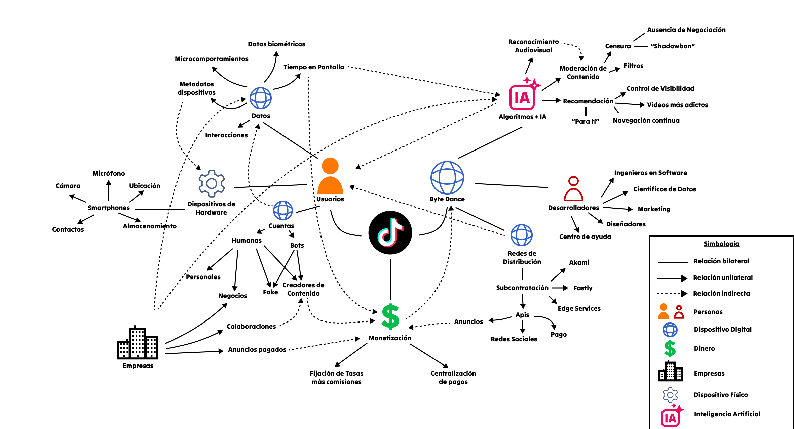
¿Qué nos dice implícitamente su uso?
“Interactúa y produce contenido para poder monetizarlo”
Incentiva: Dar likes, comentar, compartir, guardar videos, seguir cuentas y eventualmente producir contenido propio.
Facilita: La interacción rápida con otros usuarios y la creación de contenido desde la misma plataforma.
Dificulta: Formas de interacción más personales, ya que gran parte de la participación está estructurada alrededor de acciones visibles y cuantificables, como likes, comentarios, seguidores y visualizaciones dentro de la plataforma.
Elementos de diseño que lo producen: Los botones de like, comentarios, favoritos y compartir permanecen visibles junto al video, permitiendo interactuar sin abandonar el contenido. Además, el botón + se encuentra permanentemente disponible para acceder a la creación de videos. Las visualizaciones, likes, comentarios y cantidad de seguidores hacen visible la respuesta de otros usuarios y convierten la interacción social en datos cuantificables.
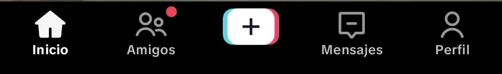
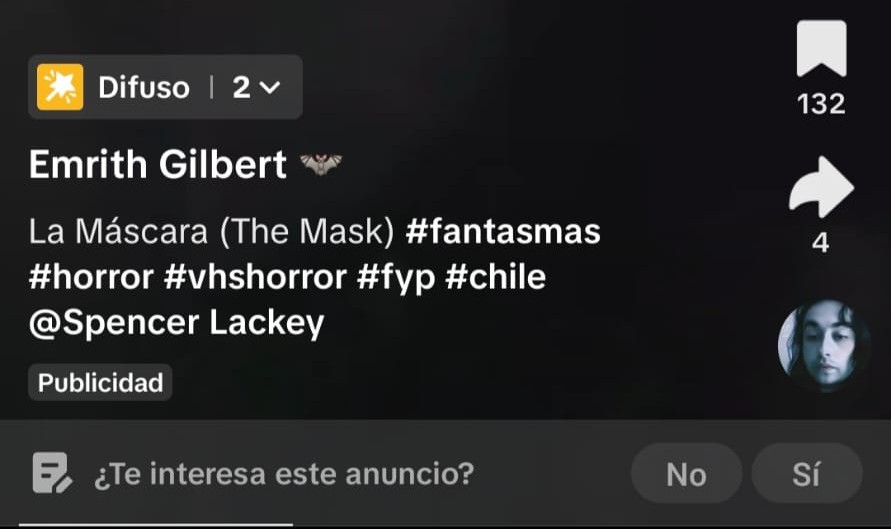
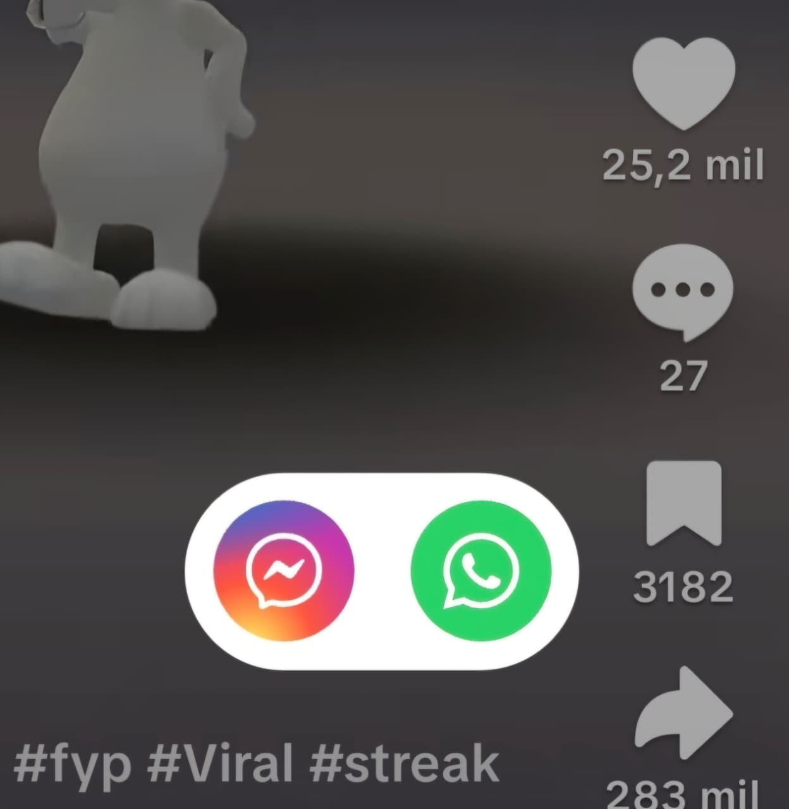
“Quédate viendo videos por el mayor tiempo posible” (Problemático)
Incentiva: Prolongar las sesiones de uso y continuar consumiendo videos incluso después de haber entrado originalmente por un contenido específico.
Facilita: Permanecer en la aplicación mediante la entrega constante de contenido adaptado a los intereses y comportamientos anteriores del usuario.
Dificulta: Reconocer un momento claro para detenerse, debido a que el contenido se renueva constantemente y no existe un final definido para el fyp.
Elementos de diseño que lo producen: El algoritmo del fyp ('Para ti') selecciona y ordena los videos según las interacciones y comportamientos del usuario, generando un flujo personalizado de contenido. Además, funciones como la reproducción a velocidad 2x permiten acelerar el consumo y aumentar la cantidad de contenido que puede verse en un período determinado.
También puede considerarse el uso de audios y tendencias, donde fragmentos particularmente reconocibles o llamativos de una canción se utilizan en numerosos videos. Esto genera una estructura de repetición donde el usuario encuentra estímulos similares muchas veces pero dentro de contenidos diferentes.
Argumento: Este funcionamiento beneficia principalmente a la plataforma y a los patrocinadores que invierten en publicidad, ya que mientras más tiempo permanece el usuario en ella, mayor es la cantidad de contenido que puede consumir. Por esta razón, aumentan las oportunidades de interacción, recopilación de datos y exposición a publicidad. En cambio, para el usuario, el beneficio de recibir contenido personalizado puede interferir con su capacidad de regular voluntariamente cuánto tiempo desea permanecer en la aplicación.
El script opera bajo valores como la eficiencia, personalización, continuidad y maximización de la atención. La interfaz permite que el usuario siempre tenga algo nuevo que consumir, reduciendo la interferencia y las pausas dentro de la experiencia. De esta manera, la atención del usuario pasa a funcionar como un recurso que la plataforma busca mantener y administrar.
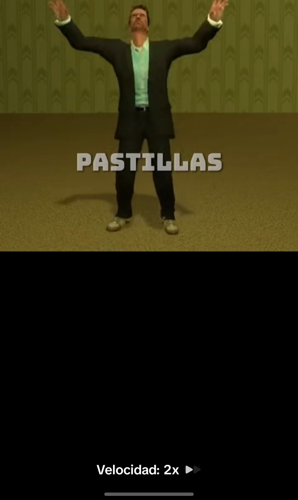
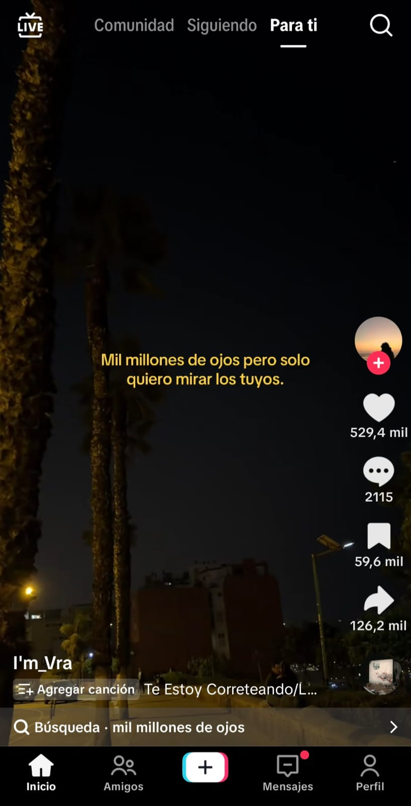
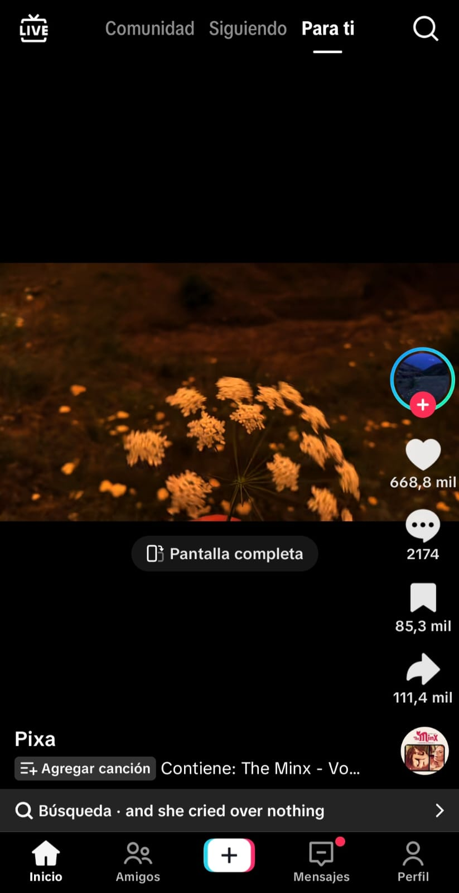
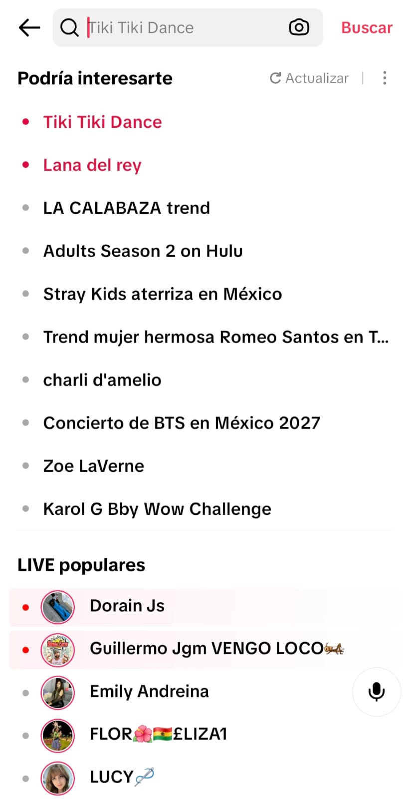
“Divulga contenido con pares para lograr una estadía prolongada”
Incentiva: Enviar videos a amigos, mantener conversaciones a partir del contenido y regresar diariamente a la aplicación para continuar intercambiando videos.
Facilita: Compartir un mismo contenido con varias personas de manera rápida y establecer interacciones recurrentes mediante los chats.
Dificulta: Separar el acto de compartir contenido del uso continuo de la plataforma, ya que compartir puede convertirse en un motivo para volver diariamente a TikTok y mantener conversaciones dentro de la aplicación.
Elementos de diseño que lo producen: El botón de compartir permite enviar un video directamente a distintos contactos y al mantenerlo presionado aparecen opciones adicionales de distribución. También es posible seleccionar varios chats simultáneamente.
Además de eso, las rachas, que para ser mantenidas los usuarios deben interactuar y compartir contenido de manera recurrente. Esto puede generar que la gente cree contenido específicamente para mantener la racha, transformando el acto de compartir en una actividad periódica dentro de la plataforma.
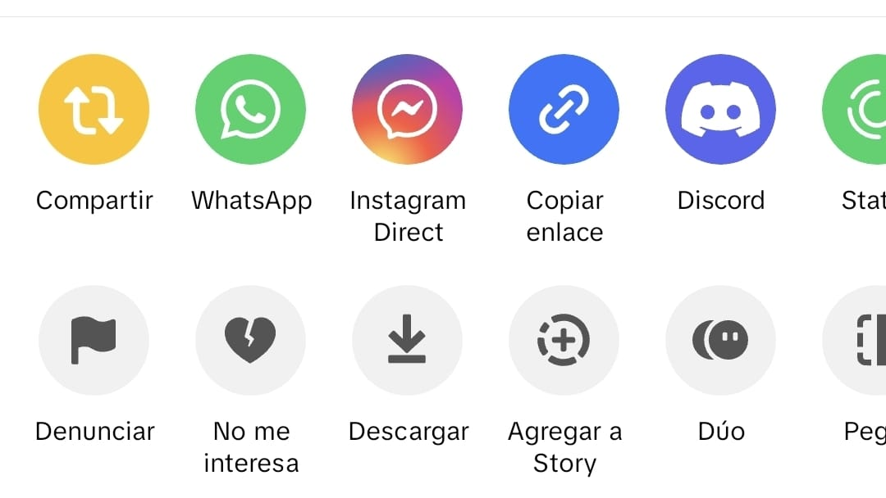
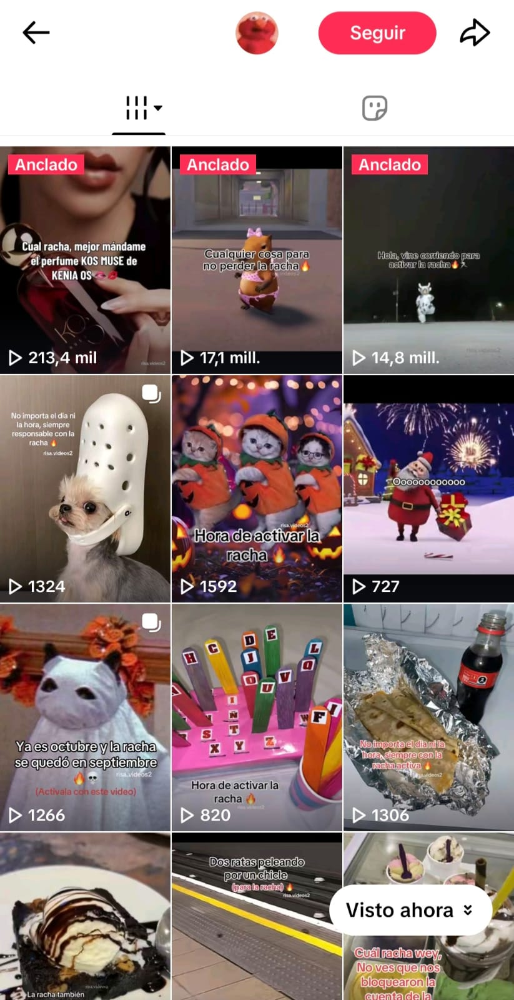
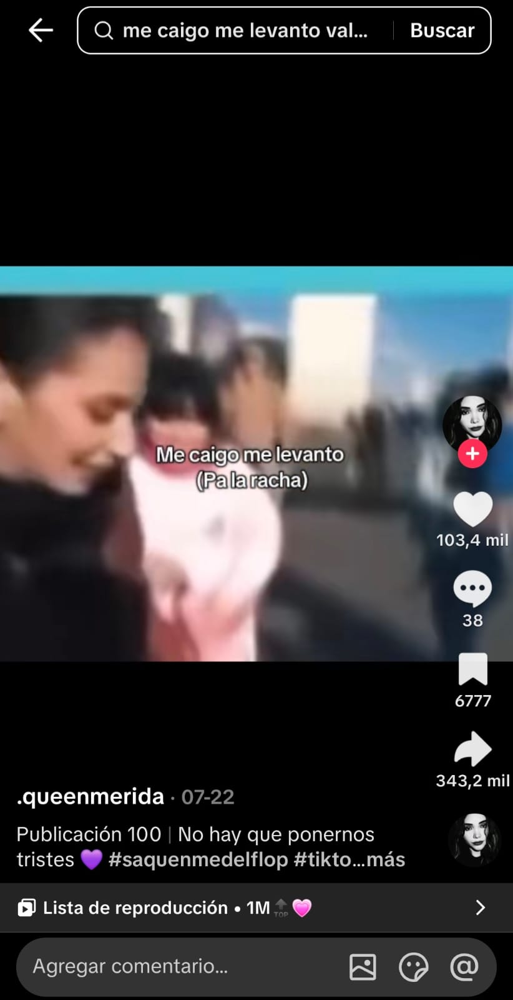
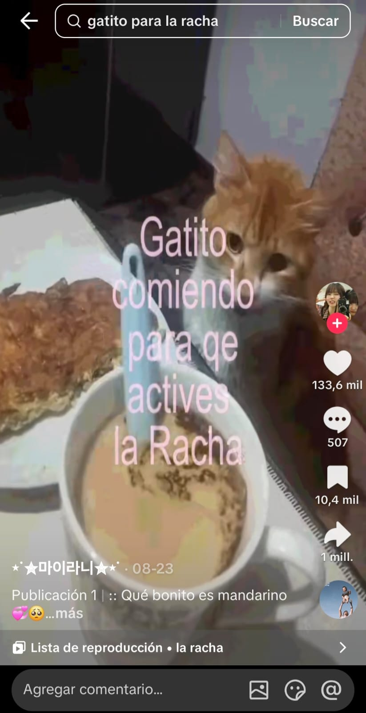
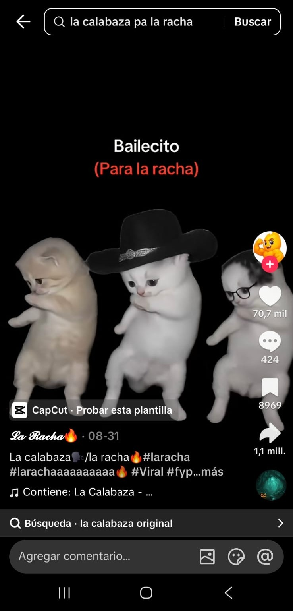